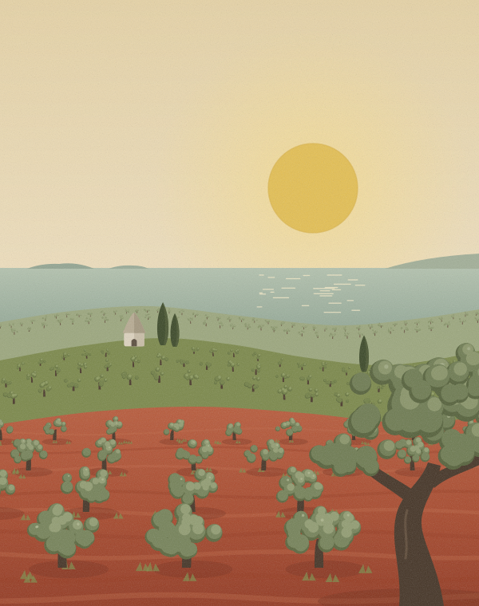
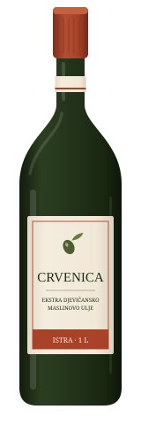
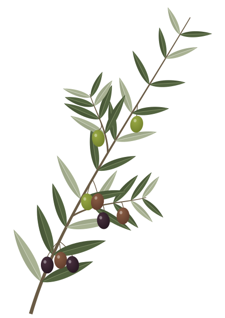
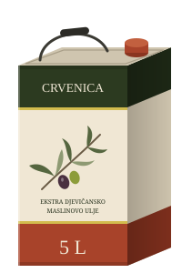
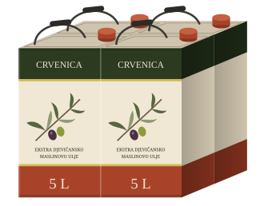

Okus
Mlado ulje je gorko i ljuto. To je dobar znak, a s mjesecima postaje blaže.
- Voćnost 7/10
- Gorčina 6/10
- Pikantnost 7/10
Miris
Ekstra djevičansko maslinovo ulje iz Istre
Naše masline rastu na istarskoj crvenici, bez prskanja i bez umjetnih gnojiva. Beremo ih ručno i isti dan nosimo u uljaru.
Berba 2026 je u tijeku. Prve boce novog ulja šaljemo sredinom studenog.



O nama
Prva stabla posadio je nono Bepo 1974., na zemlji gdje je prije bio vinograd. Danas se o 640 stabala brinemo nas dvoje, a djeca vikendom dolaze na berbu.
Ne prskamo, ni protiv muhe ni protiv korova. Travu između stabala kosimo, a granje od rezidbe vraćamo zemlji. Prinos je zato manji, ali ovo ulje prije svega jedemo mi.
Prodajemo ono što ostane nakon što napunimo svoje kante. Neke godine to je puno, neke malo. Kad nestane, nestalo je do iduće berbe.
Ana i Marko
Toliko je puta vodič Flos Olei proglasio Istru najboljom maslinarskom regijom na svijetu.
Crvena zemlja, sunce i blizina mora odrade velik dio posla. Mi se trudimo to ne pokvariti.
Izvor: Turistička zajednica IstreUlje
Ekstra djevičansko maslinovo ulje, mješavina tri sorte s našeg maslinika. Svaku berbu šaljemo na analizu i ovdje pišemo brojke iz nalaza.
Mlado ulje je gorko i ljuto. To je dobar znak, a s mjesecima postaje blaže.
Miris
Kiselost0,16 %
Manje je bolje. Granica za ekstra djevičansko je 0,8 %.
Peroksidni broj5,1 mEq O2/kg
Manje je bolje. Granica je 20.
Polifenoli540 mg/kg
Od njih dolaze gorčina i ljutina. Što ih je više, ulje dulje ostaje svježe.
Istarska bjelica 55 %
Najgorča i najljuća od tri. Ulju daje snagu.
Buža 30 %
Najraširenija istarska sorta. Mekša, s mirisom zelene rajčice i badema.
Leccino 15 %
Blaga i voćna, zaokružuje mješavinu.
Cijeli nalaz laboratorija za berbu 2026 šaljemo na upit.
Berba
Ulje nastaje u nekoliko tjedana berbe. Ostatak godine brinemo se o stablima.
Beremo ručno i malim grabljicama, na mreže razapete ispod stabla. Masline ne padaju na zemlju i ne čekaju u vrećama.
Od stabla do uljare prođe manje od šest sati. Masline se prešaju na tradicionalnoj preši, ispod 27 °C, da ulje zadrži miris.
Ulje odmara u inox posudama, u mraku i hladu. U bocu ili limenku ide tek kad stigne vaša narudžba.
Cijenik
Razlika je samo u pakiranju. Što je pakiranje veće, litra je jeftinija.
Tamna staklena boca · 1 L
20 €
Za prvo kušanje ili za poklon nekome tko zna što je dobro ulje.
Naš izbor

Limenka · 5 L
90 €
Tako ulje kupuju istarske kuće. Limenka ne propušta svjetlo, a iz nje lako napunite bocu za stol.

4 limenke · 20 L
300 €
Otprilike godišnja zaliha za kuću u kojoj se kuha na maslinovom ulju. Otvarate limenku po limenku, ostale ostaju zatvorene i svježe.
Šaljemo po cijeloj Hrvatskoj, a paket obično stiže za 2 do 3 radna dana. Dostava je 5 €, a za narudžbe od 90 € besplatna.
Pouzećem ili uplatom na račun. Račun i upute pošaljemo emailom čim potvrdimo narudžbu.
Dođite po ulje k nama i kušajte ga na licu mjesta. Samo nas nazovite dan ranije.
Pitanja
Ako ovdje nema odgovora, pišite nam ili nazovite. Radije ćemo objasniti nego da kupite naslijepo.
Postavite pitanjeNemamo. Ne prskamo i ne koristimo umjetna gnojiva, ali certifikaciju nismo prošli, pa ulje po zakonu ne smijemo zvati ekološkim. Možete doći i vidjeti maslinik, to nam je draže od papira.
Tako se ponaša svježe ulje od maslina branih na vrijeme. Gorčina i pikantnost dolaze od polifenola i s mjesecima se smiruju. Ulje koje ne peče baš ništa obično je staro ili od prezrelih maslina.
Na tamnom i hladnom mjestu, dalje od štednjaka, dobro zatvoreno. Zatvoreno traje oko 18 mjeseci. Otvorenu limenku potrošite u dva do tri mjeseca.
Nakon narudžbe javimo se emailom ili porukom s potvrdom. Plaćate pouzećem ili uplatom na račun, a paket obično stiže za 2 do 3 radna dana.
Za sada samo po Hrvatskoj. Ako ste iz Slovenije, Austrije ili Njemačke, pišite nam pa ćemo vidjeti što se može.
Možete, samo nas nazovite dan ranije. Pokazat ćemo vam maslinik i dati da kušate prije nego što kupite.
Beremo od sredine listopada do sredine studenog. Prve boce novog ulja šaljemo sredinom studenog, dok ga ima.
Narudžba
Javljamo se isti dan. Za vrijeme berbe to je često tek navečer.
Kušanje
Uz najavu, svaki dan osim nedjelje